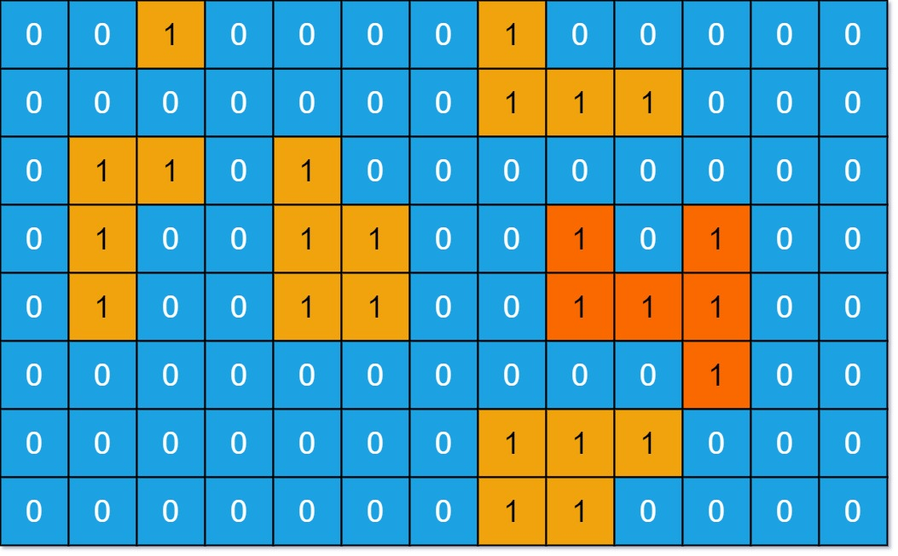

Graph standard problems
Questions Discussed
- Number of Islands
- Clone Graph
- Max Area of Island
- Pacific Atlantic Water Flow
- Surrounded Regions
- All Paths From Source to Target
- Course Schedule
- Download Speed
Number of Islands
Find the problem on leetcode \(\to\)
Problem Statement
Given an m x n 2D binary grid grid which represents a map of '1's (land) and '0's (water), return the number of islands.
An island is surrounded by water and is formed by connecting adjacent lands horizontally or vertically. You may assume all four edges of the grid are all surrounded by water.
Example
Input: grid = [
["1","1","1","1","0"],
["1","1","0","1","0"],
["1","1","0","0","0"],
["0","0","0","0","0"]
]
Output: 1
Input: grid = [
["1","1","0","0","0"],
["1","1","0","0","0"],
["0","0","1","0","0"],
["0","0","0","1","1"]
]
Output: 3
Approach
We'll use a simple DFS apporach to find the number of islands. The appoach is to when we touch a landmass, we'll mark all the connected landmass as '0' using DFS and increase the number of islands. Then travel through the space, until we find another landmass.
This way only new landmasses are considered in the number of islands.
Here is a code sample that uses DFS to find the number of islands.
Code
class Solution {
private:
void dfs(vector<vector<char>> &grid, int i, int j, int r, int c) {
if (i< 0 || i >= r || j<0 || j >= c || grid[i][j] == '0') {
// if the dfs subroutine goes out of bounds,
// or we find water during the traversal to find landmasses
// we return
return;
}
// if we find a grid[i][j] == "1" means this is a part of
// the island so we set this position as "0" so that we
// don't revisit this again
grid[i][j] = '0';
// run recursive dfs on all directions
dfs(grid, i-1, j, r, c);
dfs(grid, i+1, j, r, c);
dfs(grid, i, j-1, r, c);
dfs(grid, i, j+1, r, c);
}
public:
int numIslands(vector<vector<char>>& grid) {
int islandCount = 0;
int rows = grid.size();
int cols = grid[0].size();
for (int i=0; i<rows; i++) {
for (int j=0; j<cols; j++) {
if (grid[i][j] == '1') {
dfs(grid, i, j, rows, cols);
islandCount++;
}
}
}
return islandCount;
}
};
Clone Graph
Find the Problem on Leetcode \(\to\)
Problem Statement
Given a reference of a node in a connected undirected graph. Return a deep copy (clone) of the graph.
Approach
- We'll create a
unordered_mapto store the mapping between new and old nodes in the graph. - Then we'll run a BFS algorithm on the graph to find new nodes and connect them to their corrospoding neighbors.
The following is a working code example for this apporach.
Code
/*
// Definition for a Node.
class Node {
public:
int val;
vector<Node*> neighbors;
Node() {
val = 0;
neighbors = vector<Node*>();
}
Node(int _val) {
val = _val;
neighbors = vector<Node*>();
}
Node(int _val, vector<Node*> _neighbors) {
val = _val;
neighbors = _neighbors;
}
};
*/
class Solution {
public:
Node* cloneGraph(Node* node) {
if (not node) return nullptr;
unordered_map<Node*, Node*> map;
// create a node corrospoding to the starting node
map[node] = new Node(node->val);
queue<Node*> q;
q.push(node);
while (!q.empty()) {
Node* current = q.front();
q.pop();
// for all neighbor of current check if we visited that or not?
// if we don't visit we enter it in the map
for(auto nbr:current->neighbors) {
if (map.find(nbr) == map.end()) {
map[nbr] = new Node(nbr->val);
q.push(nbr);
}
// add the newly created neighbor on the map[current] neighbors
map[current]->neighbors.push_back(map[nbr]);
}
}
return map[node];
}
};
Max Area of Island
You are given an \(M \times N\) binary matrix grid. An island is a group of 1's (representing land) connected 4-directionally (horizontal or vertical.) You may assume all four edges of the grid are surrounded by water.
The area of an island is the number of cells with a value 1 in the island.
Return the maximum area of an island in grid. If there is no island, return \(0\).
Examples

Input:
Upper image as a 2-d grid
Output: 6
Explanation: The answer is not 11, because the island must be connected 4-directionally.
Approach
- We'll modify the previous problem Number of Islands to count the size of the island during the DFS instead of just doing nothing.
- This way we can find the size of the Islands during the DFS, we'll keep track of the max-size we've seen so far.
Code
class Solution {
private:
int dfs(vector<vector<int>>& grid, int i, int j, int r, int c) {
if (i < 0 or j <0 or i >=r or j >=c or grid[i][j] == 0) {
return 0;
}
grid[i][j] = 0;
return 1 + dfs(grid, i+1, j, r, c) + dfs(grid, i-1, j, r, c) + dfs(grid, i, j + 1, r, c) + dfs(grid, i, j - 1, r, c);
}
public:
int maxAreaOfIsland(vector<vector<int>>& grid) {
int maxSize = 0;
int numberOfIsland = 0;
int rows = grid.size();
int cols = grid[0].size();
for (int i=0; i<rows; i++) {
for (int j=0; j<cols; j++) {
if (grid[i][j] == 1) {
int size = dfs(grid, i, j, rows, cols);
maxSize = std::max(maxSize, size);
numberOfIsland++;
}
}
}
if (numberOfIsland == 0) return 0;
return maxSize;
}
};
Pacific Atlantic Water Flow
Find the problem on Leetcode \(\to\)
Problem Statement
There is an \(m \times n\) rectangular island that borders both the Pacific Ocean and Atlantic Ocean. The Pacific Ocean touches the island's left and top edges, and the Atlantic Ocean touches the island's right and bottom edges.
The island is partitioned into a grid of square cells. You are given an \(m \times n\) integer matrix heights where heights[r][c] represents the height above sea level of the cell at coordinate \((r, c)\).
The island receives a lot of rain, and the rain water can flow to neighboring cells directly north, south, east, and west if the neighboring cell's height is less than or equal to the current cell's height. Water can flow from any cell adjacent to an ocean into the ocean.
Return a 2D list of grid coordinates result where result[i] = [ri, ci] denotes that rain water can flow from cell \((r_i, c_i)\) to both the Pacific and Atlantic oceans.
Example

Input: heights = [[1,2,2,3,5],[3,2,3,4,4],[2,4,5,3,1],[6,7,1,4,5],[5,1,1,2,4]]
Output: [[0,4],[1,3],[1,4],[2,2],[3,0],[3,1],[4,0]]
Approach
- We'll use DFS to solve this problem with a reverse approach.
- First instead of searching from where the water can flow to ocean we'll check from ocean what is the reverse of the path through which the water is flowing.
- Naturally water flows from top height to bottom height, here we'll do the opposite where we'll check if the neighbors height is greater than the current height we'll travel (because we're searching the reverse of the waterflow's path),
- Now all columns of row \(0\) and all the rows of column \(0\) has the pacific water, we'll draw a DFS to find where the water can go using our customized DFS algorithm.
- Similarly we'll do this for the atlantic ocean.
- Now we'll check where the water from both can reach, we'll return that in the answers array.
Code
class Solution {
private:
vector<vector<int>> flowCoordinates;
void dfs(vector<vector<int>>& heights, vector<vector<bool>> &visited, int i, int j, int r, int c) {
visited[i][j] = true;
if (i>0 and not visited[i-1][j] and heights[i][j] <= heights[i-1][j]) {
dfs(heights, visited, i-1,j,r,c);
}
if (i<r-1 and not visited[i+1][j] and heights[i][j] <= heights[i+1][j]) {
dfs(heights, visited, i+1,j,r,c);
}
if (j>0 and heights[i][j] <= heights[i][j-1] and not visited[i][j-1]) {
dfs(heights, visited, i,j-1,r,c);
}
if (j<c-1 and heights[i][j] <= heights[i][j+1] and not visited[i][j+1]) {
dfs(heights, visited, i,j+1,r,c);
}
}
public:
vector<vector<int>> pacificAtlantic(vector<vector<int>>& heights) {
int rows = heights.size();
int cols = heights[0].size();
vector<vector<bool>> pacific(rows, vector<bool>(cols));
vector<vector<bool>> atlantic(rows, vector<bool>(cols));
for (int i=0;i<rows;i++) {
dfs(heights, pacific, i, 0, rows, cols);
dfs(heights, atlantic, i, cols-1, rows, cols);
}
for (int i=0; i<cols; i++) {
dfs(heights, pacific, 0, i, rows, cols);
dfs(heights, atlantic, rows-1, i, rows, cols);
}
// now check for some (i, j) both pacific and altantic shows true
for (int i=0; i<rows; i++) {
for (int j=0;j<cols;j++) {
if (pacific[i][j] and atlantic[i][j]) {
flowCoordinates.push_back({i, j});
}
}
}
return flowCoordinates;
}
};
Surrounded Regions
Find the problem on Leetcode \(\to\)
Problem Statement
Given an m x n matrix board containing 'X' and 'O', capture all regions that are 4-directionally surrounded by 'X'.
A region is captured by flipping all 'O's into 'X's in that surrounded region.
Example

Input:
board = [["X","X","X","X"],["X","O","O","X"],["X","X","O","X"],["X","O","X","X"]]
Output: [["X","X","X","X"],["X","X","X","X"],["X","X","X","X"],["X","O","X","X"]]
Approach
- We'll use the approach from the previous problem. We'll do a quick reverse thinking, see we should not capture regions that are on the border so what we'll do is use a DFS to quickly capture the regions that surrounds the border with some other alphabet "N" let's say.
- These can be achieved by running DFS on the "O" at the row \(0\), last row and column \(0\) and at the last column.
- So we'll run dfs at all the positions of "O" at the boundaries,
- then we'll capture all the regions that are left out "not in the border".
- Then we'll convert the "N"s into "O"s.
Code
class Solution {
private:
void dfs(vector<vector<char>>& board, int i, int j, int r, int c) {
board[i][j] = 'N';
if (i>0 and board[i-1][j] == 'O') {
dfs(board, i-1, j, r, c);
}
if (i<r-1 and board[i+1][j] == 'O') {
dfs(board, i+1, j, r, c);
}
if (j>0 and board[i][j-1] == 'O') {
dfs(board, i, j-1, r, c);
}
if (j<c-1 and board[i][j+1] == 'O') {
dfs(board, i, j+1, r, c);
}
}
public:
void solve(vector<vector<char>>& board) {
// capture everything except an unsurrounded region
// if some O is there at the row 0, n-1 and col 0, n-1
// we'll not be able to capture it.
// run a dfs on each of the area in row 0, n-1 and col 0, n-1
// to not capture it and marking it as N
int rows = board.size();
int cols = board[0].size();
// vector<vector<bool>> visited(rows, vector<bool>(cols));
// run dfs at all the positions of O at the boundaries
// col wise
for (int i=0; i<rows; i++) {
// 0th column
if (board[i][0] == 'O') {
dfs(board, i, 0, rows, cols);
}
// cols-1th column
if (board[i][cols-1] == 'O') {
dfs(board, i, cols-1, rows, cols);
}
}
// run row wise at col = 0 and rows-1
for (int j=1; j<cols-1; j++) {
// 1st row because 0,0 is already done
if (board[0][j] == 'O') {
dfs(board, 0, j, rows, cols);
}
if (board[rows-1][j] == 'O') {
dfs(board, rows-1, j, rows, cols);
}
}
for (int i=0; i<rows; i++) {
for (int j=0; j<cols; j++) {
if (board[i][j] == 'O') board[i][j] = 'X';
if (board[i][j] == 'N') board[i][j] = 'O';
}
}
}
};
All Paths From Source to Target
Find the Problem on Leetcode \(\to\)
Problem Statement
Given a directed acyclic graph (DAG) of n nodes labeled from \(0\) to node \(n - 1\), find all possible paths from node \(0\) to node \(n - 1\) and return them in any order.
The graph is given as follows: graph[i] is a list of all nodes you can visit from node i (i.e., there is a directed edge from node i to node graph[i][j]).
Examples

Input: graph = [[1,2],[3],[3],[]]
Output: [[0,1,3],[0,2,3]]
Explanation: There are two paths: 0 -> 1 -> 3 and 0 -> 2 -> 3.

Approach
- We'll do a DFS approach, instead of putting the path into the answer when we reach the last node to be reachable we'll put the path when we visit \(n-1^{th}\) node because in the question we are asked to find all path from node \(0\) to node \(n - 1\).
- Our approach will find all the possible path via DFS recursions. In order to store the path information we'll add an array called
lvlthat is copied and shared to the next recursion level. So for each recursion calls we'll maintain a of the path visited so far calledlvlthat'll be passed to the next level. That is how we'll maintain the path information. - At the end we'll return all the paths recorded during the recursion run.
Code
class Solution {
private:
set<vector<int>> s;
void dfs(vector<vector<int>>& graph, vector<int> lvl, int index) {
if (index > graph.size() - 1) return;
// stop dfs once there is no where to go
if (index == graph.size() - 1) {
// return once reached the final destination
// final destination is always the n-1 vertex according to the question
lvl.push_back(index); // final destination added
s.insert(lvl); // add this path to the answer set (set for uniqueness)
return;
}
lvl.push_back(index);
for (int i=0; i<graph[index].size(); i++) {
// no cycle so should not care about the already visited part
int nbr = graph[index][i];
dfs(graph, lvl, nbr);
}
}
public:
vector<vector<int>> allPathsSourceTarget(vector<vector<int>>& graph) {
vector<int> lvl;
dfs(graph, lvl, 0);
// add the final destination to all the paths
vector<vector<int>> answer;
answer.assign(s.begin(), s.end());
return answer;
}
};
Course Schedule
Find the problem on Leetcode \(\to\)
Problem Statement
There are a total of numCourses courses you have to take, labeled from \(0\) to \(\text{numCourses} - 1\). You are given an array prerequisites where prerequisites[i] = (\(a_i, b_i\)) indicates that you must take course \(b_i\) first if you want to take course \(a_i\).
For example, the pair (\(0,1\)) indicates that to take course \(0\) you have to first take course \(1\). Return true if you can finish all courses. Otherwise, return false.
Approach
If you look carefully it is a problem of finding cycle in a graph or finding the topological sort of the graph. If the graph is a DAG then only all the courses can be completed. If there is a cycle in the graph then to take course \(a\) you have to take \(b\) and to take \(b\) you have to take \(a\), which is not possible.
So we have to find a cycle in the graph if we find a cycle then the course are not possible to complete. Now in order to find the cycle in the graph we can use DFS by coloring the vertices.
Following is a efficient implementation of DFS and cycle finding algorithm along with a custom definition for graph and solution to the leetcode problem.
Examples
Input: numCourses = 2, prerequisites = [[1,0]]
Output: true
Explanation: There are a total of 2 courses to take.
To take course 1 you should have finished course 0. So it is possible.
Input: numCourses = 2, prerequisites = [[1,0],[0,1]]
Output: false
Explanation: There are a total of 2 courses to take.
To take course 1 you should have finished course 0, and to take course 0 you should also have finished course 1. So it is impossible.
Code
enum class Color{
black, red, grey
};
class Graph {
private:
vector<vector<int>> adj_list;
int graph_size;
bool has_cycle = false;
public:
Graph(int V) {
graph_size = V;
for (int i=0; i<V; i++) {
vector<int> v;
adj_list.push_back(v);
}
}
void add_edge(int source, int destination) {
// directed edge only
adj_list[source].push_back(destination);
}
void dfsSubRoutine(unordered_map<int, Color>&color, int nodeID) {
// do coloring of the edges
// color grey means not visited
// color red means visited and not fully explored
// color black means visited and fully explored
if (color[nodeID] == Color::red) {
has_cycle = true;
return;
} else if (color[nodeID] == Color::grey){
color[nodeID] = Color::red;
for (int nbr:adj_list[nodeID]) {
dfsSubRoutine(color, nbr);
}
}
color[nodeID] = Color::black;
return;
}
bool hasCycle() {
// run a DFS algorithm and check if there is a cycle or not?
// check if some node is previously visited or not?
// if some neighbor is neighbor previously visited
// then return true;
// means there is cycle
unordered_map<int, Color> color;
for (int i=0; i<graph_size; i++) color[i] = Color::grey;
for (int i = 0; i<graph_size; i++) {
// for all component of the graph run the subroutine
if (color[i] == Color::grey) dfsSubRoutine(color, i);
}
return has_cycle;
}
};
class Solution {
public:
bool canFinish(int numCourses, vector<vector<int>>& prerequisites) {
// courseID = {0 .. n-1}
// preReq[i] = {to Take i, must have taken j}
// nave cycle detection
// if the graph is a DAG then only a solution is possible but otherwise
// for any cycle if you have to take a then take b
// if you have to take b then before you take a
Graph g = Graph(numCourses);
for (auto courses:prerequisites) {
g.add_edge(courses[1], courses[0]);
}
return not g.hasCycle();
}
};
Download Speed
Consider a network consisting of n computers and m connections. Each connection specifies how fast a computer can send data to another computer. Kotivalo wants to download some data from a server. What is the maximum speed he can do this, using the connections in the network?
Please see here \(\to\) for full explaination of the problem and the input and output structure.
Example I/O
Approach
Use Edmond-Karp algorithm for finding max-flow in the flow-network. Make the internet mesh as a flow network and make source set to \(1\) and destination set to \(n\). Then run Edmond-Karp algorithm to find the maximum flow. This maximum flow is the maximum download speed possible.
Code
#include <climits>
#include <iostream>
#include <queue>
#include <vector>
using namespace std;
class Graph {
public:
vector<vector<int>> adj_list;
vector<vector<long long int>> capacity;
int source;
int sink;
int getSink() {
return sink;
}
void setSink(int id) {
sink = id;
}
int getSource() {
return source;
}
void setSource(int id) {
source = id;
}
Graph(int n) {
for (int i = 0; i < n; i++) {
vector<int> v;
adj_list.push_back(v);
vector<long long int> caprow(n, 0);
capacity.push_back(caprow);
}
}
void add_directed_edge(int from, int to, long long int cap) {
adj_list[from].push_back(to);
capacity[from][to] += cap;
}
long long int bfs(vector<int> &parent) {
// find an augmenting path from s->t and return the path in
// parent vector
std::fill(parent.begin(), parent.end(), -1);
parent[source] = -2;
queue<pair<int, long long int>> q;
q.push({source, LONG_MAX});
while (not q.empty()) {
int front = q.front().first;
long long int flow = q.front().second;
q.pop();
for (int nbr : adj_list[front]) {
// if there is no parent discovered before and there exists a flow
if (parent[nbr] == -1 and capacity[front][nbr]) {
// then set parent and add it to augmenting path
parent[nbr] = front;
long long int new_flow = std::min(flow, capacity[front][nbr]);
if (nbr == sink)
return new_flow;
// otherwise push onto queue with updated flow
q.push({nbr, new_flow});
}
}
}
// there exists no s->t path so return 0 flow
return 0;
}
long long int findMaxFlow() {
long long int flow = 0;
vector<int> parent(adj_list.size(), 0);
long long int newflow = 0;
// backtrace to s via the parent array and use the
// augmenting path to augment the flow
while (true) {
newflow = bfs(parent);
if (not newflow)
break;
int current = sink;
flow += newflow;
// otherwise through the augmenting path do the flow
while (current != source) {
int prev = parent[current];
// augment the flow
capacity[prev][current] -= newflow;
capacity[current][prev] += newflow;
current = prev;
}
}
return flow;
}
};
int main() {
int vertex, edges;
cin >> vertex >> edges;
Graph g(vertex + 1);
g.setSource(1);
g.setSink(vertex);
while (edges--) {
int from, to;
long long int capacity;
cin >> from >> to >> capacity;
g.add_directed_edge(from, to, capacity);
g.add_directed_edge(to, from, 0);
}
long long int maxflow = g.findMaxFlow();
cout << maxflow << endl;
}
Comments
This comments system is powered by GitHub Discussions